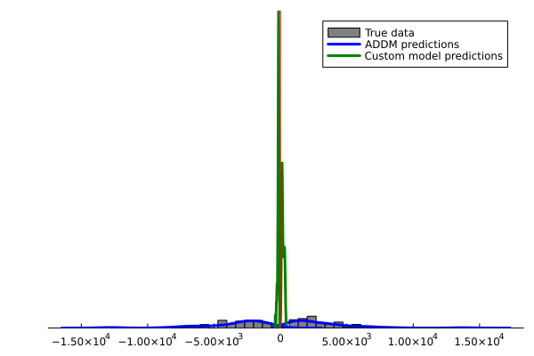
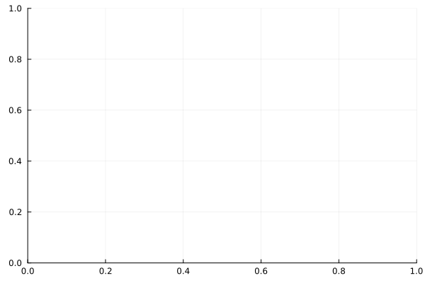

Defining custom models
Though the packages comes with the standard attentional DDM that allows for multiplicative and additive discounting of unattended items, users might also conceive of other generative processes (within the sequantial sampling to a bound framework) that give rise to observed choices and response times.
In this tutorial we lay out the framework for how to incorporate such models within our toolbox to take advantage of Julia's processing speed.
Broadly, this involves defining three parts:
- trial simulator describing how the new parameter changes the data generating process resulting in a choice and response time
- this is then fed into
ADDM.simulate_dataalong with the model object and stimuli to generate choice and response times.
- this is then fed into
- model object with new parameter
- this is only a container of key-value pairs of parameter names and values used a convenient wrapper to feed into the simulator and likelihood computer.
- trial likelihood function computing the probability of the observed choice and response time
- this is then fed into
ADDM.grid_searchalong with the data you want to compute the likelihoods for and the parameter search space.
- this is then fed into
Let's begin with importing the packages we'll use in this tutorial.
julia> using ADDM, CSV, DataFrames, DataFramesMeta, Distributions, LinearAlgebra, StatsPlots
Define simulator
The built-in model has a decay parameter for a linear decay of the barrier. Let's build a model with an exponential decay of the barrier such that the barrier at each timestep is defined as barrier(t) = exp(-λt).
Based on the built-in trial simulators as defined here the trial simulator would look like this. The custom model trial simulator is identical to the built-in simulators except for where the barriers for the accummulation process is defined:
function my_trial_simulator(;model::ADDM.aDDM, fixationData::ADDM.FixationData,
valueLeft::Number, valueRight::Number,
timeStep::Number=10.0, numFixDists::Int64=3, cutOff::Number=100000)
[...]
# The values of the barriers can change over time.
# In this case we include an exponential decay
# Due to the shape of the exponential decay function the starting point for the decay is exp(0) = 1
barrierUp = exp.(-model.λ .* (0:cutOff-1))
barrierDown = -exp.(-model.λ .* (0:cutOff-1))
[...]
trial = ADDM.Trial(choice = choice, RT = RT, valueLeft = valueLeft, valueRight = valueRight)
trial.fixItem = fixItem
trial.fixTime = fixTime
trial.fixRDV = fixRDV
trial.uninterruptedLastFixTime = uninterruptedLastFixTime
trial.RDV = tRDV
return trial
endDefine model container
Then we create a model object of class aDDM to store the parameters of our model. There are two ways of doing this. First, we could use the ADDM.define_model function. That would like:
julia> my_model = ADDM.define_model(d = 0.007, σ = 0.03, θ = .6, barrier = 1, nonDecisionTime = 100, bias = 0.0)ADDM.aDDM(Dict{Symbol, Any}(:nonDecisionTime => 100, :σ => 0.03, :d => 0.007, :bias => 0.0, :barrier => 1, :decay => 0, :θ => 0.6, :η => 0.0))
julia> my_model.λ = .05;
The ADDM.define_model function is limited to the standard parameter names. So the new parameter λ is added to the model after its creation. Alternatively, we can create an empty model object and add our parameters individually.
my_model = ADDM.aDDM()
my_model.d = 0.007
my_model.σ = 0.03
my_model.θ = .6
my_model.η = 0
my_model.barrier = 1
my_model.nonDecisionTime = 100
my_model.bias = 0.0
my_model.λ = .05Simulate data
Now that we have defined the generative process (the simulator function) and the model (the parameter values) there are two more necessary inputs for simulating data: stimuli (pairs of values for different objects) and fixation data (location and duration).
Define stimuli and fixation distribution
We will use data from Tavares et al. (2017) that comes with the toolbox. Importantly, we will only be using the stimuli and fixations from this dataset, not the empirical choice and response times. This is ensured by the stimsOnly argument of the ADDM.load_data_from_csv function. By using the stimuli and the fixations to sample from, we will generate choice and response using our custom simulator function.
julia> data = ADDM.load_data_from_csv("../../../data/stimdata.csv", "../../../data/fixations.csv"; stimsOnly = true);
Extract stimulus values from this dataset and wrangle into the format expected by the simulator function.
julia> nTrials = 2400;julia> my_stims = (valueLeft = reduce(vcat, [[i.valueLeft for i in data[j]] for j in keys(data)])[1:nTrials], valueRight = reduce(vcat, [[i.valueRight for i in data[j]] for j in keys(data)])[1:nTrials]);
Aggregate fixations from all subjects to create fixation duration distributions indexed by value difference and order (1st, 2nd etc.). Since the fixations will be indexed by the value difference, this is extracted from the stimuli and used as an input to the ADDM.process_fixations function. The simulator function will sample from this aggregate data.
julia> vDiffs = sort(unique(reduce(vcat, [[i.valueLeft - i.valueRight for i in data[j]] for j in keys(data)])));julia> my_fixations = ADDM.process_fixations(data, fixDistType="fixation", valueDiffs = vDiffs);
Simulate choice and response times
Now that we have read in each of the required inputs we can simulate data with our custom simulator function. To do so we specify the third positional argument to the wrapper function ADDM.simulate_data as my_trial_simulator so it knows to use this function to generate choice and response times.
julia> my_args = (timeStep = 10.0, cutOff = 20000, fixationData = my_fixations);julia> my_sim_data = ADDM.simulate_data(my_model, my_stims, my_trial_simulator, my_args);ERROR: UndefVarError: `my_trial_simulator` not defined
Define likelihood function
Based on the built-in likelihood function as defined here the custom likelihood function would look like this. The custom likelihood function is identical to the built-in function except for where the barriers for the accummulation process is defined:
function my_likelihood_fn(;model::ADDM.aDDM, trial::ADDM.Trial, timeStep::Number = 10.0,
stateStep::Number = 0.1)
[...]
# The values of the barriers can change over time.
barrierUp = exp.(-model.λ .* (0:numTimeSteps-1))
barrierDown = -exp.(-model.λ .* (0:numTimeSteps-1))
[...]
# Compute the likelihood contribution of this trial based on the final
# choice.
likelihood = 0
if trial.choice == -1 # Choice was left.
if probUpCrossing[end] > 0
likelihood = probUpCrossing[end]
end
elseif trial.choice == 1 # Choice was right.
if probDownCrossing[end] > 0
likelihood = probDownCrossing[end]
end
end
return likelihood
endRecover parameters for simulated data
Now that we have generated some data using known parameters with our custom simulator and defined the likelihood function to compute the likelihood of a choice and response time pair associated with a specific fixation pattern, we can compute the likelihoods for a range of parameter combinations to confirm that the likelihood function correctly recovers the true parameters.
Define search grid
julia> fn = "../../../data/custom_model_grid.csv";julia> tmp = DataFrame(CSV.File(fn, delim=","));julia> param_grid = NamedTuple.(eachrow(tmp));
Run grid search on simulated data
julia> fixed_params = Dict(:η=>0.0, :barrier=>1, :decay=>0, :nonDecisionTime=>100, :bias=>0.0);julia> my_likelihood_args = (timeStep = 10.0, stateStep = 0.1);julia> output = ADDM.grid_search(my_sim_data, param_grid, my_likelihood_fn, fixed_params, likelihood_args=my_likelihood_args, return_grid_nlls = true, return_trial_posteriors = true, return_model_posteriors = true);ERROR: UndefVarError: `my_sim_data` not definedjulia> best_pars = output[:best_pars];ERROR: UndefVarError: `output` not definedjulia> nll_df = output[:grid_nlls];ERROR: UndefVarError: `output` not definedjulia> trial_posteriors = output[:trial_posteriors];ERROR: UndefVarError: `output` not definedjulia> model_posteriors = output[:model_posteriors];ERROR: UndefVarError: `output` not defined
The true parameters are d = 0.007, σ = 0.03, θ = .6, λ = .05. Even with smaller state space step size the correct decay is not recovered. Instead, the fast response times are attributed to faster drift rates and larger sigmas.
julia> sort!(nll_df, [:nll]);ERROR: UndefVarError: `nll_df` not definedjulia> show(nll_df, allrows = true)ERROR: UndefVarError: `nll_df` not defined
The posteriors have no uncertainty either.
julia> marginal_posteriors = ADDM.marginal_posteriors(param_grid, model_posteriors, true);ERROR: UndefVarError: `model_posteriors` not definedjulia> ADDM.margpostplot(marginal_posteriors)ERROR: UndefVarError: `margpostplot` not defined

How do the posteriors change across trials?
julia> trial_param_posteriors = DataFrame();julia> for i in 1:nTrials # Get the posterior for each model after the curent trial cur_trial_posteriors = Dict(zip(keys(trial_posteriors), [x[i] for x in values(trial_posteriors)])) # Use built-in function to marginalize for each parameter cur_param_posteriors = ADDM.marginal_posteriors(param_grid, cur_trial_posteriors) # Wrangle the output to be a single df and add trial number info for j in 1:length(cur_param_posteriors) df = cur_param_posteriors[j][:,:] #assign a copy df[!, :par_name] .= names(df)[1] df[!, :trial_num] .= i rename!(df, Symbol(names(df)[1]) => :par_value) trial_param_posteriors = vcat(trial_param_posteriors, df, cols=:union) end end;ERROR: UndefVarError: `trial_posteriors` not definedjulia> par_names = unique(trial_param_posteriors[:,:par_name]);ERROR: ArgumentError: column name "par_name" not found in the data frame since it has no columnsjulia> plot_array = Any[];julia> for cur_par_name in par_names plot_df = @rsubset(trial_param_posteriors, :par_name == cur_par_name) cur_plot = @df plot_df plot( :trial_num, :posterior_sum, group = :par_value, title = cur_par_name, xlabel = "Trial", ylabel = "Posterior p", ) push!(plot_array, cur_plot) end;ERROR: UndefVarError: `par_names` not definedjulia> plot(plot_array...)Plot{Plots.GRBackend() n=0}
